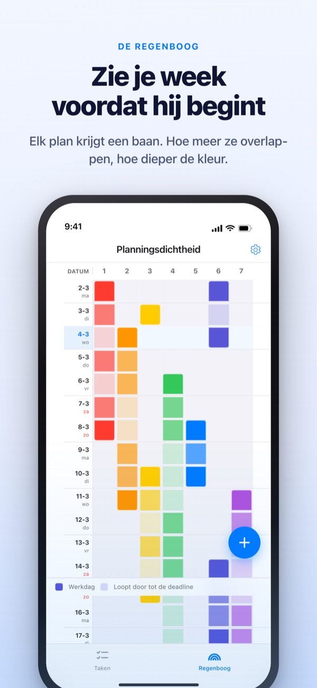
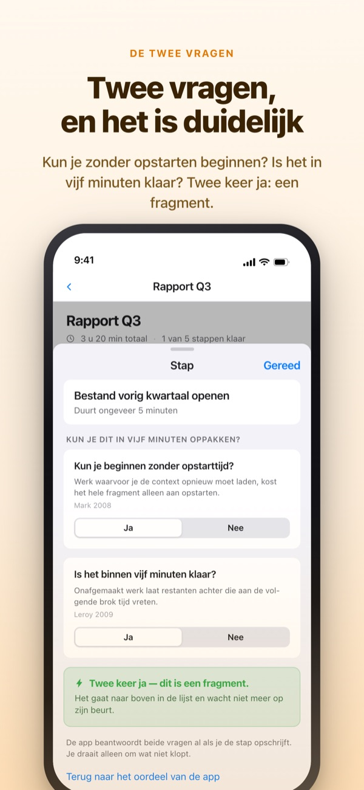
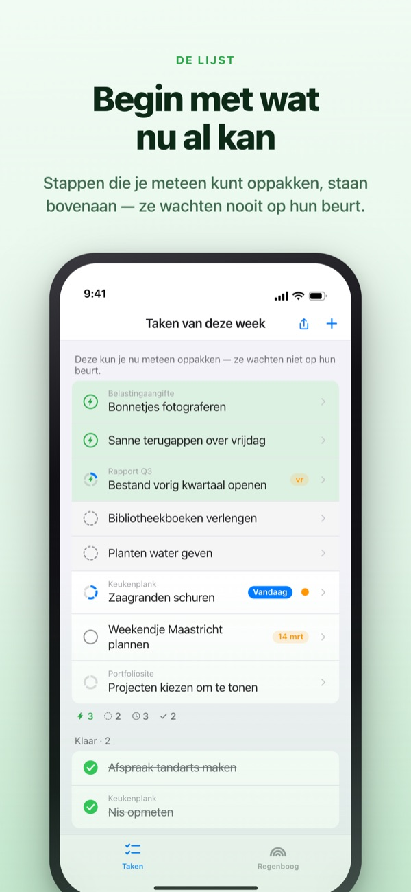
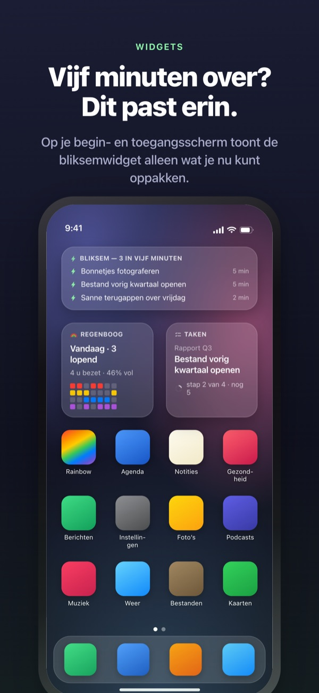

Zie de volle week aankomen.
Benut de vijf minuten die je hebt.
Hoe meer je werk overlapt, hoe dieper de regenboog kleurt. Knip een grote taak op in stappen, en de stap die je in een gaatje kunt doen staat al bovenaan klaar.
De regenboog, taken opknippen, de timer en synchroniseren met de Mac zijn gratis.

Probeer het zelf
‘Kwartaalrapport Q3’ is al in vijf stappen opgeknipt. Kies een stap, verander de duur of draai een antwoord om. Alleen een stap met twee keer ja wordt een fragment dat je in vijf minuten oppakt.
Ziet je agenda er leeg uit, terwijl je die week amper adem krijgt?
Een agenda laat zien of er iets gepland staat, niet hoeveel er bovenop elkaar ligt. Dat drie deadlines in dezelfde week vallen, merk je vaak pas als je erin zit, en de vijf minuten tussendoor gaan op aan je takenlijst doorlezen. Rainbow of Desire tekent je week als raster, kleurt overlap donkerder en zet de stappen voor een gaatje alvast apart.
Twee vragen en het is duidelijk
Knip je een grote taak op, dan krijgt elke stap twee vragen. Kun je beginnen zonder opstarttijd? Is het binnen vijf minuten klaar?
Alleen twee keer ja maakt een fragment. De app antwoordt eerst op basis van de duur en je woorden, jij draait het alleen om als het niet klopt.

Even tijd? Kijk alleen bovenaan
Veeg een taak naar rechts voor een bliksem, en hij springt vooraan in de rij. Je hoeft niet de hele lijst te lezen om iets te vinden.
Of stappen op elkaar wachten, bepaal je één keer per groep. Op volgorde zet de eerste open stap vooraan, Willekeurig het fragment dat je nu kunt pakken.

Zichtbaar zonder de app te openen
De timer telt af tot het moment dat een afspraak eindigt, en de resterende tijd staat ook op het Dynamic Island en het toegangsscherm.
Widgets voor beginscherm en toegangsscherm tonen waar je mee bezig bent, wat in vijf minuten past en de regenboog van deze week. (Widgets zijn Pro)

In drie stappen aan de slag
- 1
Teken een afspraak
Houd een leeg vak op de startdag ingedrukt en tik op de einddag. Er verschijnt een lijn op de regenboog.
- 2
Knip grote taken op
Tik op een taak, schrijf de stappen op en kies een duur. De twee vragen beantwoordt de app vooraf.
- 3
Kijk bovenaan bij een gaatje
Fragmenten en taken met een bliksem staan bovenaan, zonder op hun beurt te wachten.
Wat je op het scherm tegenkomt
- Donker vak · licht vak
- dagen waarop je er echt aan werkt, en de rest tot de einddatum
- Een volle rij
- een dag met zoveel tegelijk dat één uitloop de hele dag opschuift
- Fragment
- twee keer ja; pak het op als je vijf minuten hebt
- Korte brok
- geen opstarttijd, maar niet klaar in een fragment; in één zit af
- Brok
- vraagt opstarttijd of duurt 45 minuten of langer; zet het in vrijgehouden tijd
- Bliksem
- je eigen ‘nu meteen’-markering; springt naar boven
- Op volgorde · Willekeurig
- of stappen op elkaar wachten, één keer per groep ingesteld
- Tijdlogboek
- de weekafrekening: wat overblijft, teruggewonnen tijd en herstel, apart gehouden en nooit opgeteld
Tijd telt van onder naar boven op: de duur van een taak is de som van haar stappen.
Wat je voor vandaag nodig hebt, is gratis
Gratis
- De regenboog (raster met drukte per dag)
- Taken opknippen in stappen, en de twee vragen
- Bliksem en stapvolgorde
- Timer op het Dynamic Island en het toegangsscherm
- Synchroniseren met Rainbow Craft op de Mac via iCloud
- Tijdlogboek van de afgelopen twee weken
Rainbow Plus · Rainbow Pro
- Plus: planningsstatistieken en het tijdlogboek verder terug dan twee weken
- Pro: alles van Plus, plus widgets voor beginscherm en toegangsscherm
- Pro: importeren uit Agenda en blijvend tonen
- Pro: je planning delen, alleen lezen
- Pro: ontgrendelt ook Rainbow Craft Pro op de Mac
Elk als jaarabonnement of eenmalige aankoop voor altijd
Je betaalt alleen voor terugkijken op eerdere weken en voor dingen buiten de app brengen. Heb je Pro eerder gekocht of loopt je maandabonnement nog, dan ben je nog steeds Pro.
Veelgestelde vragen
Heb ik een account of iCloud nodig?
Niet als je alleen werkt. Er is geen registratie en alles blijft op je apparaat. Voor andere apparaten, de Mac-app of delen log je in bij iCloud.
De app heeft een vraag verkeerd beantwoord.
Tik op de stap en zet Ja of Nee om. Je eigen antwoord gaat altijd voor. Met ‘Terug naar het oordeel van de app’ geef je het weer uit handen. Een stap zonder duur telt niet als fragment, omdat de app niet weet of hij binnen vijf minuten klaar is.
Kan ik met iemand delen?
Met een uitnodigingslink deel je je planning alleen-lezen (Pro), of open je een takenlijst die jij en de genodigden samen lezen en bewerken. Iedereen met de link kan meedoen, dus stuur hem alleen naar wie je bedoelt. Het staat los van Delen met gezin van Apple.
Zie ik mijn agenda-afspraken?
Afspraken uit de agenda’s die je kiest verschijnen op de regenboog en in je dagoverzicht (Pro). De app leest alleen en schrijft niets terug.
Kan ik afvinken vanuit een widget?
Widgets zijn alleen om te bekijken. Tik erop en je taken gaan direct open, daar vink je af.
Moet ik de Mac-app apart kopen?
Rainbow Craft is een losse macOS-app in de Mac App Store. Met hetzelfde iCloud-account synchroniseren taken en weekplannen vanzelf, en dat kost niets.
Staan mijn oudere taken er nog?
Ja. Taken, stappen en ingestelde duur blijven bewaard. Labels van de oude startvoorwaarden beoordeelt de app opnieuw met de twee vragen.
Waar worden mijn gegevens bewaard?
Er is geen server. Alles staat op je apparaat en in je eigen iCloud, waar de ontwikkelaar niet bij kan. Geen advertentie-ID, geen locatie. De app stuurt alleen anonieme gebruiksstatistieken die niet naar jou te herleiden zijn, en die zet je uit in Instellingen.
Hoe zeg ik een abonnement op?
In Instellingen > Apple Account > Abonnementen. Zonder opzegging uiterlijk 24 uur voor het einde van de periode wordt het tegen dezelfde prijs verlengd. Voor altijd is een eenmalige betaling.
Loop je vast of klopt er iets niet? Mail naar leeo@kakao.com. Ook in de instellingen van de app vind je een contactoptie.